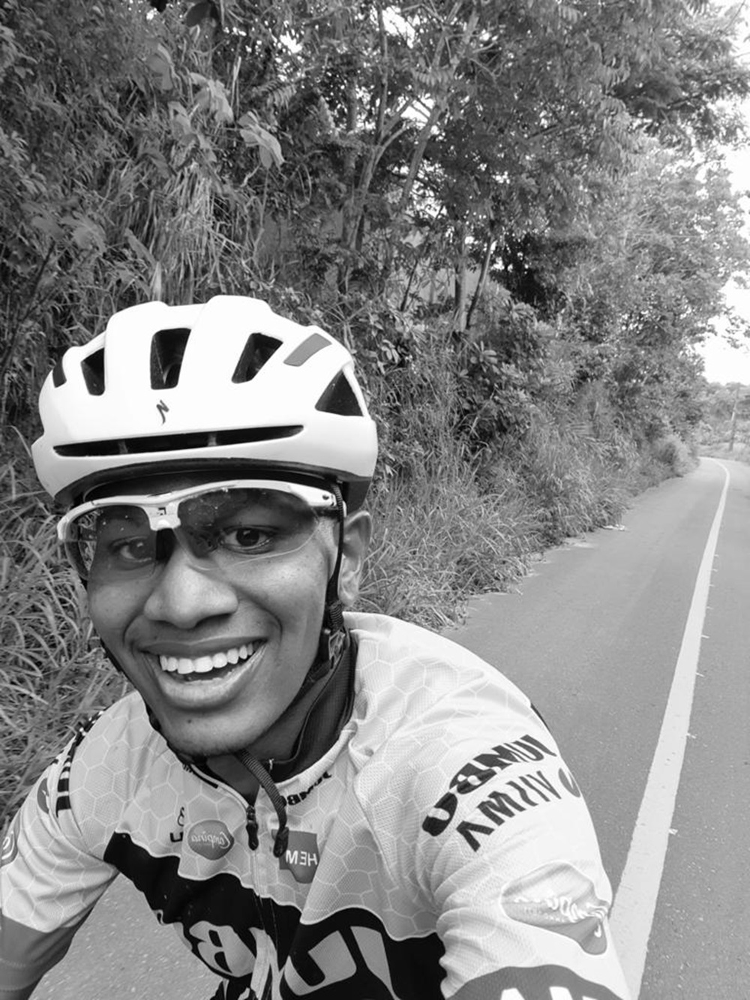

Saiba mais sobre mim!

Estou estudando na área de tecnologia e tenho conhecimentos sobre Javascript, HTML e CSS, porém tenho focado os meus estudos para o Backend, com tecnologias como NODEJS e Python. Além disso, também venho atuando há 2 anos como Técnico de Mecatrônica no ambiente industrial, tenho contato com softwares de planejamento de manutenção (SAP PM) e software de Warehouse Management. Carrego como meus pontos fortes, bom relacionamento interpessoal, além de um bom domínio de uma segunda lingua.